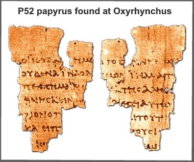

As of 1980, we have 5,386 separate Greek manuscripts which include early fragments (such as the Rylands fragment which dates just 30 years after the original!). Papyri portions of papyrus made from reeds were used from the apostles to the 3rd Century. There are 72 total papyri. Uncials manuscripts written in uppercase Greek letters and bound in book form were written on animal skins. They were dated from the 3rd to 10th centuries. Minuscules manuscripts in lowercase Greek letters were dated from the 10th Century. Lectionaries were used in church scripture reading, 11th Century on.
the Rylands Fragment (University of Manchester) d. 125-150 CE
Everyone is familiar with “telephone”. It goes something like this:
Everyone gathers in a circle. Then, someone composes a moderate-long text. Next, he/she whispers it to the person sitting next without clarification. That person, in turn whispers what he/she heard to the next person, and so on. When the message gets back to the originator– it is almost unrecognizable.
Some would contend that that is the way our New Testament came to us. How many of you have heard the complaint: “The Bible has gone through so many translations and revisions that it cannot possibly have any resemblance to the original” or “Even before the New Testament text was written, people relied on oral transmission which is highly inaccurate.”
Let’s take the second contention first:
It is true that there was a gospel tradition and it was most likely and primarily oral (1 Corinthians 11:2 ; 2 Thess. 3:6) The word “teachings” παραδόσεις (Acc. Fem. pl. παρaδoσις ) is best translated “traditions” (cf. 1 Cor.15:3 παρaδoκα , from παρaδoκεω Perfect Act. Ind. 1S; 1 Thess. 4:1-2). However, contrary to form critical assumptions that the transmission of oral tradition could only be in short narratives, modern scholarship, and the work of ethnographers investigating oral societies have demonstrated the ability to transmit long narratives accurately.1 This does not preclude that notes were most likely taken down shortly after the events. According to Paul Rhodes Eddy and Gregory A. Boyd in their book “The Jesus Legend,”2 Jesus and at least some of the disciples were almost certainly literate.
| Author | When Written | Earliest Copy | Time Span | No. of Copies |
|---|---|---|---|---|
| Caesar | BC 100-44 | AD 900 | 1000 years | 10 |
| Plato | BC 427-347 | AD 900 | 1200 years | 7 |
| Thucydides | BC 460-400 | AD 900 | 1,300 years | 8 |
| Herodotus | BC 480-425 | AD 900 | 1,300 years | 8 |
| Homer | BC 900 | BC 400 | 500 years | 643 |
| New Testament | AD 40-100 | AD 125 | 25 years | Over 24,000 |
cf. Matt Slick, 12/10/08 https://carm.org/manuscript-evidence
Scripture tells us: Jesus could debate with the scribes in the temple at age 12 and could read from Isaiah in the synagogue (Luke 2:46, 47; 4:16-30). Also, the people were amazed at his “learning” in John 7:15 ( γράμματα οἶδεν , a term that refers to reading ability).3 At least some of the disciples must have been literate– Matthew needed “trade literacy” to do his job (Mark 2:14; Matt. 9:9; 10:13). Eusebius passed on to us the tradition that Mark was a note-taker for Peter. Finally, Luke mentions “many” who attempted to write accounts (Luke 1:1).4 In addition, the discovery of a vast store of literature at Qumran calls into question any assumption of widespread illiteracy in Palestine during the 2nd Temple Period.5
Now we will examine the first contention, that many translations and revisions have made the text hopelessly corrupt:
The reality is that scholars today are virtually certain that at least 7/8 of the New Testament text is identical to the original and the rest is tentatively certain. Textual criticism has shown that the thousands of variants are of little concern. How does NT textual criticism work? I will use an analogy from Gregory Koukl.6
Pretend your Aunt Sally learns in a dream the recipe for an elixir that preserves youth. When she wakes up, she scribbles the directions on a scrap of paper, then runs to the kitchen to make her first glass of the potion. In a few days Aunt Sally is transformed into a picture of radiant youth because of her daily dose of “Sally’s Secret Sauce.” Aunt Sally is so excited that she sends detailed, handwritten instructions on how to make the sauce to her three bridge partners. They, in turn, make copies for 10 of their friends. All goes well until Aunt Sally’s dog eats the scrap of paper on which she first wrote the recipe. In a panic she contacts her three friends who have suffered similar mishaps, so the alarm goes out to the others in an attempt to recover the original wording. Sally rounds up the surviving hand-written copies, 26 in all. When she spreads them out on the kitchen table she immediately notices some differences. Twenty-three of the copies are exactly the same. Of the remaining three, however, one has misspelled words, another has an inverted phrase (‘mix then chop’ instead of ‘chop then mix’), and one includes an ingredient that is not listed on any of the others. What do you think Sally did? Do you think she was able to recover the original recipe?
The answer is a resounding yes!
Why do we need to do textual criticisim? Does that mean we must criticize the Bible?
We need to do textual criticism because the New Testament alone, despite the careful copying by so many scribes down the centuries has about 24,000 variants—different readings of the same text.
And, NO, we do not criticize God’s word as originally revealed, but we MUST be critical of the TEXT. Like Sally, we know that the original text was correct, but lost. Our job is to recover that original text from amongst the variants. Just like Aunt Sally, scholars can reconstruct the original by comparing the thousands of scripture portions available to us and determine from among the variant readings which best represents the original.
These variant readings have been organized by scholars into "families" based on geography and time period.